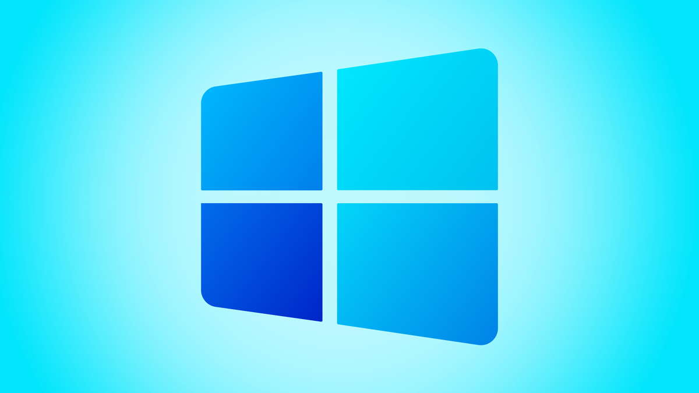

MICROSOFT WINDOWS 11

APRESENTAÇÃO
O design do Windows 11 é mais moderno em relação ao visual do Windows 10. Na nova versão do sistema operacional,os cantos das janelas ficaram levemente arredondados, os ícones foram renovados e pequenas animações tentam tornar a experiência de uso mais agradável.
RECURSOS
| PROGRAMA | FUNÇÃO |
| Paint | Faz desenhos |
| Wordpad | Faz textos |
| Bloco de notas | Faz anotações |
| Assistência rápida | Permite compartilhamentos |
| Calendário | Contagem e agrupamento de dias |
| Calculadora | Faz cálculos |
| Ferramenta de captura | Permite capturas de tela |
| Windows Media Player | Reproduz músicas |
| Alarmes e relógio | Reproduz alarmes e mostra a hora |
| Câmera | Tira fotografias |
| Microsoft Edge | Navegador de internet oficial Microsoft |
| Filmes e TV | Reproduz Multimidias |
| Maps | Mostra a localização |
| Microsoft Store | Loja de aplicativos da Microsoft |